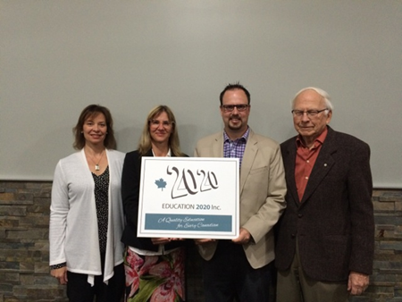

Open
Education

40 May 25, 2016
The school of life never stops teaching. – Steven Aitcheson
Criterion-referenced testing
Criterion-referenced testing is an approach to assessment in which a student’s performance is compared to a predefined set of criteria or standards and not with the work of other test takers. Criterion-referenced testing is used to determine whether a person has reached a predetermined level of achievement, and results are usually reported in terms of pass or fail, a driver’s test or an apprentice exam are good examples; all who take the exam may pass or all may fail.
The goal with these tests is to determine the level that a candidate has achieved on a certain skill or set of skills and to use it as a basis for making decisions about job entry, certification, or licensure. The key to criterion-referenced testing is clearly-stated outcomes, a set of clearly-defined levels, an external benchmark and the consistent application of the assessment process.
The assessment process must be transparent and the grades derived should be defined in terms a student understands – students should be able to trace their grades to the specifics of their performance on the tasks that were set. In fact, it is well understood that the discussion between teacher and learner about the grade assigned is an important part of the learning experience; criterion-referenced testing provides a framework for students and teachers to fully engage in the learning process.
Separating the teaching and grading process increases consistency and minimizes bias.
Excellence in Education Award

From left to right: Katherine McQuaid, Maureen Kerr, Jason Biech and Don Glendenning
Grace Christian School was named this year’s winner of the Excellence in Education Award. The award is presented to the school who demonstrates the extent and manner in which it uses technology to enhance learning and teaching. “It was not just the availability of technological tools that impressed the judges, but also the integration of technology in every aspect of the school’s life,” said Don Glendenning, President of Education 20/20.
This was the third year for the Award. Earlier awards focused on engagement and were awarded to Kincora Regional High School and Prince Street Elementary School. The Award was open to all schools and learning centres on Prince Edward Island.
Editor – Don Glendenning
_______________________________________
Education 20/20 Inc.
101 Kent St., PO Box 624 / 101, rue Kent, B.P. 624
Charlottetown, PEI / Charlottetown (Î.-P.-É.) C1A 1M0
Tel./Tél. : 902-892-2060
Email/Courriel : pei@education2020.ca
URL : www.education2020.ca
Pédagogie
ouverte
40 26 mai 2016
L’école de la vie ne cesse jamais d’enseigner. (Traduction libre) – M. Steve Aitcheson
Test axé sur des critères
Le test axé sur des critères est une approche selon laquelle l'évaluation de la performance d'un élève est comparée à un ensemble prédéfini de critères ou de normes et non pas avec le travail des autres personnes testées. Le test axé sur des critères est utilisé afin de déterminer si une personne a atteint un degré d’apprentissage prédéterminé et les résultats sont généralement présentés en termes de succès ou d'échec, le test de conduite ou l’examen d'apprenti en sont des exemples; tous ceux qui prennent l'examen peuvent réussir ou ils peuvent échouer.
Le but de ces tests est de déterminer si un candidat a atteint une certaine habileté ou un ensemble de compétences et fournira le fondement pour prendre des décisions en matière d’embauche, de certification ou d'autorisation d'exercer. La clé du test axé sur des critères est des résultats clairement énoncés, une série de niveaux clairement définis, une référence externe et l'application uniforme du processus d'évaluation.
Le processus d'évaluation doit être transparent et les notes qui en sont dérivées doivent être définies de sorte que l’étudiant puisse bien les comprendre – les élèves devraient être en mesure de retracer leurs notes aux spécificités de leur performance sur les tâches qui ont été définies. En fait, il est bien entendu que la discussion entre l'enseignant et l'apprenant concernant la note attribuée est un élément important de l'expérience en matière d’apprentissage; le test axé sur des critères constitue un cadre de référence afin que les étudiants et les enseignants s’engagent à participer pleinement dans le processus d'apprentissage.
La séparation de l'enseignement et du processus de classement améliore d’autant la cohérence et réduit le risque de biais.
Prix d’Excellence en matière d’éducation

De gauche à droite : Katherine McQuaid, Maureen Kerr, Jason Biech et Don Glendenning
L’école Grâce Christian School a mérité le Prix d'excellence en matière d’éducation 2016. Le prix est présenté à l’école qui démontre la portée et la façon avec laquelle elle utilise la technologie pour permettre d’améliorer l'apprentissage et l'enseignement. « Ce n’est pas seulement la disponibilité des outils technologiques qui a impressionné les juges mais aussi l'intégration de cette technologie dans tous les aspects de la vie scolaire », a déclaré M. Don Glendenning, président de l'organisme Education 20/20.
C’est la troisième année d’existence pour le Prix. Des prix antérieurs ont porté sur l'engagement et ont été remis aux écoles Kincora Regional High School et Prince Street Elementary School. Cette récompense était ouverte à toutes les écoles et centres d'apprentissage à l’Île-du-Prince-Édouard.
Don Glendenning, rédacteur
Education 20/20 Inc.
101 Kent St., PO Box 624 / 101, rue Kent, B.P. 624
Charlottetown, PEI / Charlottetown (Î.-P.-É.) C1A 1M0
Tel./Tél. : 902-892-2060,
Email/Courriel : pei@education2020.ca
URL : www.education2020.ca